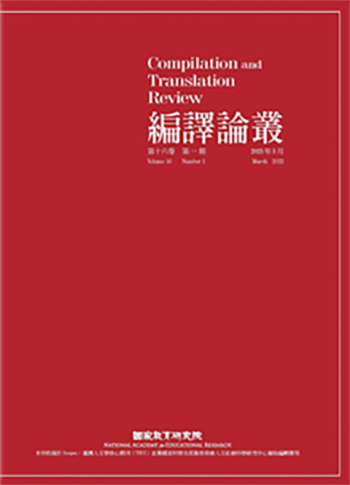

第17卷 第1期
十二年國教課程綱要倡議的素養導向課程教學如何實踐？自然及社會領域對此作最具體、前沿的回應，就是開創性地將「探究與實作」直接寫入領域課綱。日韓欽佩臺灣的進步作法，皆曾派團隊觀摩「探究與實作」的推動與實踐經驗。十二年國教課綱上路 5 年了，臺灣學子在PISA 和 ICCS 等數理、閱讀及公民素養的國際評比再次躍昇、名列前茅 …more
第17卷 第2期
本期《教育研究與發展期刊》所刊出的學術論文，展現出多元的學術內容，每篇稿件經過嚴謹的匿名審查，作者反覆的費心修改，再經由本刊編輯委員會全體委員複審及討論後，決議刊載以下三篇論文，前兩篇為一般性學術論文，最後一篇為本刊因應當前教育研究趨勢 …more
| 類別 | 篇名 / 作者 | 全文下載 |
|---|---|---|
| 研究論文 | 探討影響世界技能競賽績效因素及對臺灣技職教育政策之啟示 | |
| 得勝者教育協會情緒管理課程對青少年情緒智力的成效 | ||
| 論壇 | 探討影響世界技能競賽績效因素及對臺灣技職教育政策之啟示 |
審稿辦法審稿辦法審稿辦法審稿辦法審稿辦法審稿辦法審稿辦法審稿辦法審稿辦法審稿辦法審稿辦法審稿辦法審稿辦法審稿辦法審稿辦法審稿辦法審稿辦法審稿辦法審稿辦法審稿辦法審稿辦法審稿辦法審稿辦法審稿辦法
出版倫理
線上投稿
| 諮詢委員 |
王宏志 香港中文大學翻譯系教授 史宗玲 國立高雄科技大學應用英語系教授 白明弘 國家教育研究院語文教育及編譯研究中心副研究員 吴英成 新加坡南洋理工大學國立教育學院教授 李奭學 中央研究院中國文哲研究所研究員 周岫琴 輔仁大學跨文化研究所副教授 林慶隆 國家教育研究院語文教育及編譯研究中心研究員 陳子瑋 國立臺灣師範大學翻譯研究所副教授 陳秋蘭 國立臺灣師範大學英語學系教授 陳瑞清 明德大學蒙特雷國際研究學院口筆譯暨語言教育研究所教 授 劉敏華 香港浸會大學翻譯、傳譯及跨文化系教授 賴秉彥 國立彰化師範大學翻譯研究所教授 賴慈芸 國立臺灣師範大學翻譯研究所教授 藍月素 長榮大學翻譯學系副教授 |
|---|---|
| 編輯委員 |
李詩敏 國家教育研究院語文教育及編譯研究中心副研究員 范家銘 國立臺灣大學翻譯碩士學位學程副教授 陳宏淑 臺北市立大學英語教學系教授 曾秋桂 淡江大學日本語文學系教授 鄒文莉 國立成功大學外國語文學系教授 廖柏森 國立臺灣師範大學翻譯研究所教授 廖美玲 國立台中教育大學英語學系教授 魏伶珈 香港中文大學翻譯系副教授 |
| 諮詢委員 |
王宏志 香港中文大學翻譯系教授 史宗玲 國立高雄科技大學應用英語系教授 白明弘 國家教育研究院語文教育及編譯研究中心副研究員 吴英成 新加坡南洋理工大學國立教育學院教授 李奭學 中央研究院中國文哲研究所研究員 周岫琴 輔仁大學跨文化研究所副教授 林慶隆 國家教育研究院語文教育及編譯研究中心研究員 陳子瑋 國立臺灣師範大學翻譯研究所副教授 陳秋蘭 國立臺灣師範大學英語學系教授 陳瑞清 明德大學蒙特雷國際研究學院口筆譯暨語言教育研究所教 授 劉敏華 香港浸會大學翻譯、傳譯及跨文化系教授 賴秉彥 國立彰化師範大學翻譯研究所教授 賴慈芸 國立臺灣師範大學翻譯研究所教授 藍月素 長榮大學翻譯學系副教授 |
|---|---|
| 編輯委員 |
李詩敏 國家教育研究院語文教育及編譯研究中心副研究員 范家銘 國立臺灣大學翻譯碩士學位學程副教授 陳宏淑 臺北市立大學英語教學系教授 曾秋桂 淡江大學日本語文學系教授 鄒文莉 國立成功大學外國語文學系教授 廖柏森 國立臺灣師範大學翻譯研究所教授 廖美玲 國立台中教育大學英語學系教授 魏伶珈 香港中文大學翻譯系副教授 |